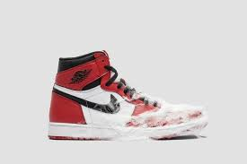

{%extends "App1/padre.html"%}
{% load static %}
{% csrf_token %}
{% block contenidoQueCambia %}
Como cuidar tus zapatillas correctamente?
Para mantener tus sneakers en buen estado y prolongar su vida útil, es importante seguir algunos consejos de cuidado.
En primer lugar, asegúrate de limpiar regularmente tus zapatillas para evitar la acumulación de suciedad y manchas. Para limpiarlas, utiliza un cepillo suave y agua tibia con jabón suave. Evita sumergir completamente las zapatillas en agua y asegúrate de secarlas bien después de limpiarlas.
También es importante proteger tus zapatillas de la lluvia y la humedad. Si vas a usar tus sneakers en días de lluvia, aplica un spray protector para repeler el agua y evitar que se mojen. Además, asegúrate de guardar tus zapatillas en un lugar seco y fresco cuando no las estés usando.
Otro consejo importante es evitar el uso excesivo de tus zapatillas. Si las usas con frecuencia, es probable que se desgasten más rápido. Para evitar esto, intenta alternar entre varios pares de sneakers y evita usar los mismos todos los días. De esta manera, reducirás el desgaste y prolongarás la vida útil de tus zapatillas.
Finalmente, asegúrate de elegir el tamaño adecuado para tus zapatillas. Si usas sneakers que son demasiado grandes o demasiado pequeños, es probable que se desgasten más rápido y puedan causarte incomodidad o lesiones. Por lo tanto, asegúrate de medir tus pies regularmente y elegir la talla adecuada para tus zapatillas.

{% endblock %}